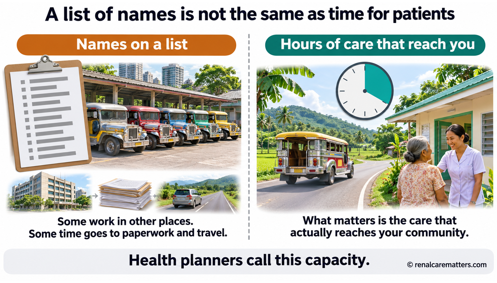
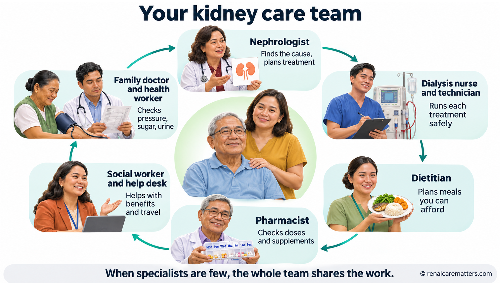
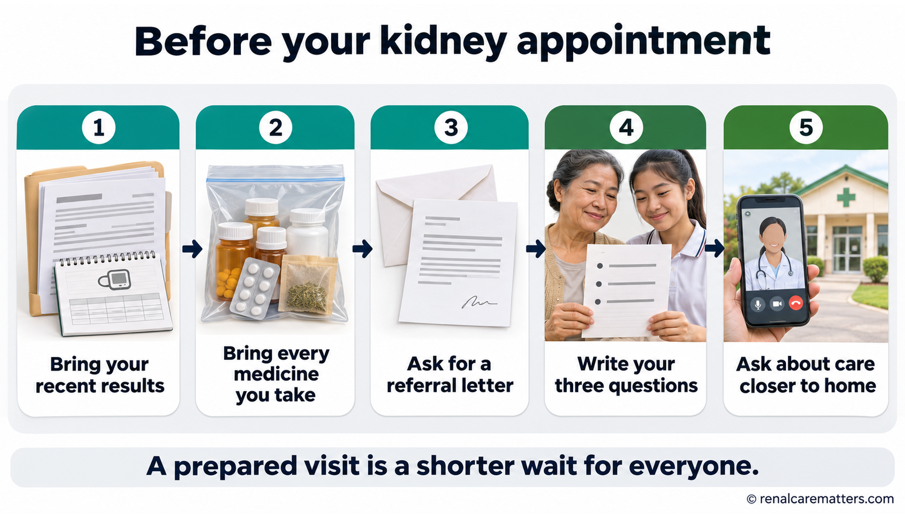
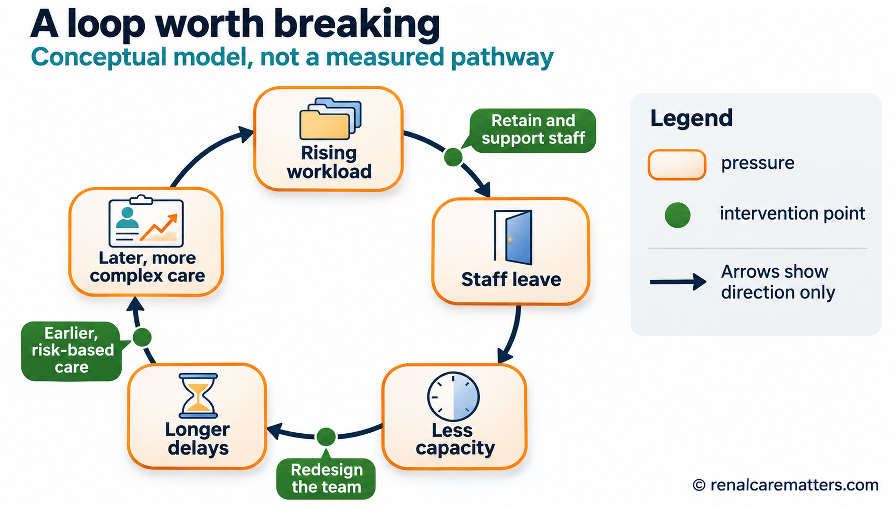
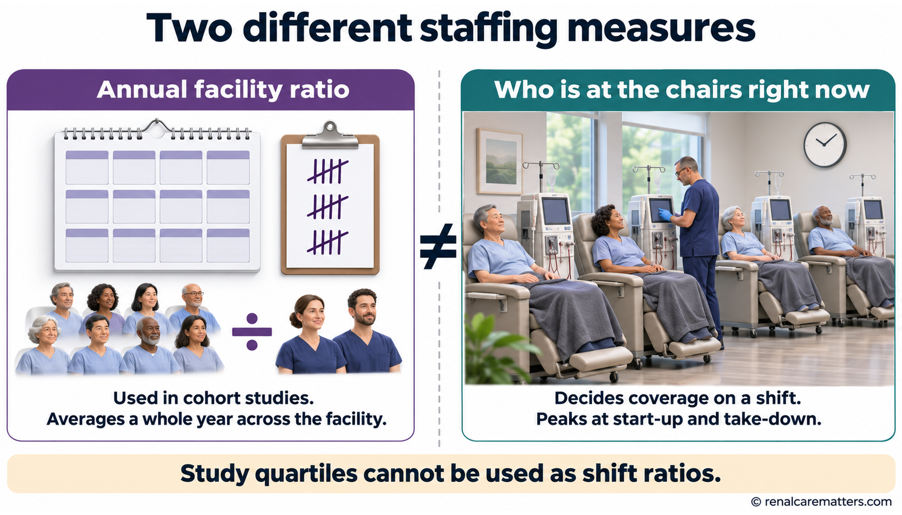
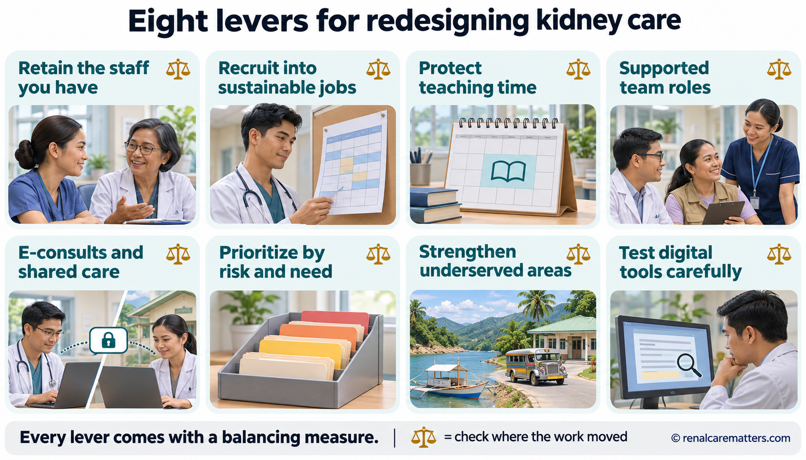
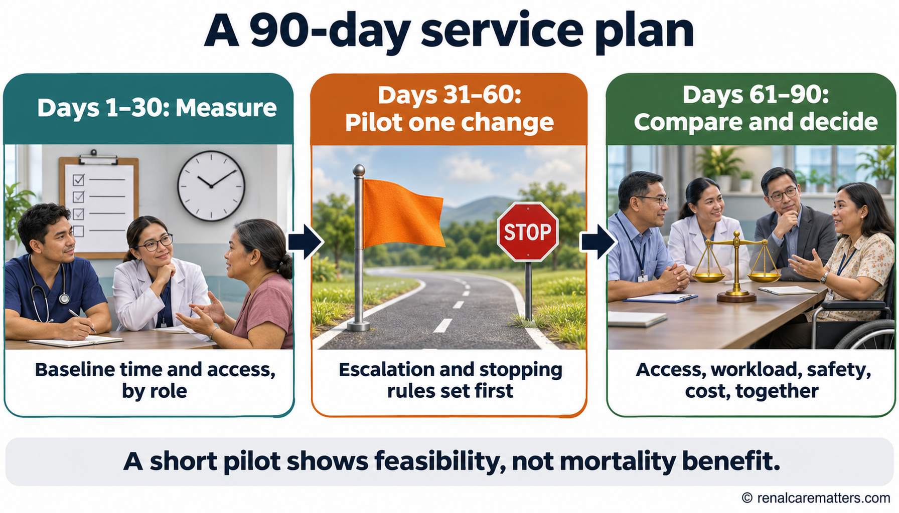
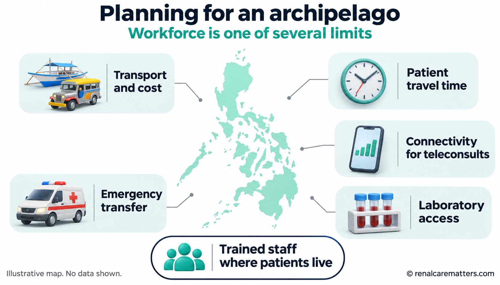

Why kidney care can be hard to reach — and what helpsBakit mahirap minsang makakuha ng pangangalaga sa bato — at ano ang nakatutulongNgano nga lisod usahay makakuha og pag-atiman sa kidney — ug unsa ang makatabangNanung mirap minsan ing pamag-alaga king batu — at nanu ing makasaup
If you have waited weeks for a kidney appointment, traveled for hours to reach a dialysis unit, or felt that your nurse had too many patients at once, you are seeing a real problem. Around the world there are not enough people trained in kidney care, and the people we do have are unevenly spread. This guide explains why, what it means for you and your family, and the practical steps that help you get safe care on time. It is written for people living with chronic kidney disease (CKD), people on dialysis, and their families.Kung naghintay ka ng ilang linggo para sa appointment sa bato, bumiyahe nang ilang oras papunta sa dialysis unit, o naramdaman mong sobrang dami ng pasyente ng iyong nurse nang sabay-sabay, totoong problema ang iyong nakikita. Sa buong mundo, kulang ang mga taong sinanay sa pangangalaga sa bato, at hindi pantay ang pagkakalat ng mga mayroon tayo. Ipinapaliwanag ng gabay na ito kung bakit, ano ang ibig sabihin nito para sa iyo at sa iyong pamilya, at ang mga praktikal na hakbang para makakuha ka ng ligtas na pangangalaga sa tamang oras. Para ito sa mga may chronic kidney disease (CKD), mga nagda-dialysis, at kanilang pamilya.Kung naghulat ka og pipila ka semana para sa appointment sa kidney, nagbiyahe og pipila ka oras paingon sa dialysis unit, o mibati nga daghan kaayo og pasyente ang imong nurse sa usa ka higayon, tinuod nga problema ang imong nakita. Sa tibuok kalibotan, kulang ang mga tawo nga nabansay sa pag-atiman sa kidney, ug dili patas ang pagkatag sa mga anaa nato. Gipasabot niini nga giya kung ngano, unsa ang kahulogan niini para kanimo ug sa imong pamilya, ug ang mga praktikal nga lakang aron makakuha ka og luwas nga pag-atiman sa saktong panahon. Para kini sa mga adunay chronic kidney disease (CKD), mga nag-dialysis, ug ilang pamilya.Nung minuna kang pilan a domingu para king appointment king batu, mibiyahe kang pilan a oras ban datang king dialysis unit, o asabyan mung dakal ing pasyente ning nurse mu king metung a panaun, tutung problema ing akakit mu. King gabun-gabun, kulang la reng tau a sinanay king pamag-alaga king batu, at e pante ing pamikalat da reng atin tamu. Ipaliwanag na niti ing giya nung nanu, nanu ing kayulugan na para keka at king pamilya mu, at reng praktikal a dapat a makasaup ban makakuang ligtas a alaga king tamang oras. Para ini kareng atin chronic kidney disease (CKD), reng magpa-dialysis, at king pamilya ra.
Bring the right papersDalhin ang tamang papelesDad-a ang saktong papelesDarang me ing tamang papeles
A referral letter, recent results, and your medicines make a short visit far more useful.Ang referral letter, mga bagong resulta, at iyong mga gamot ay nagpapahalaga sa maikling konsulta.Ang referral letter, bag-ong mga resulta, ug imong mga tambal makapahimo nga mas mapuslanon ang mubo nga konsulta.Ing referral letter, bayung resulta, at reng gamut mu pipakamalagu de ing malagwa a konsulta.
Know when not to waitAlamin kung kailan hindi dapat maghintayHibal-i kung kanus-a dili angay maghulatBalu me nung kapilan e ka dapat munaya
Some symptoms need the emergency room today, not the next clinic slot.May mga sintomas na kailangan ng emergency room ngayon, hindi ng susunod na schedule sa klinika.Adunay mga sintomas nga kinahanglan ang emergency room karon, dili ang sunod nga iskedyul sa klinika.Atin sintomas a kailangan ing emergency room ngeni, e ing susunod a iskedyul king klinika.
Use your whole teamGamitin ang buong teamGamita ang tibuok teamGamitan me ing sablang team
Your family doctor, nurses, dietitian, and pharmacist share the work with the kidney specialist.Kahati ng kidney specialist sa trabaho ang iyong family doctor, mga nurse, dietitian, at pharmacist.Kauban sa kidney specialist sa trabaho ang imong family doctor, mga nurse, dietitian, ug pharmacist.Kayabe na ning kidney specialist king obra ing family doctor mu, reng nurse, dietitian, at pharmacist.
Fewer specialists, spread unevenlyKaunting espesyalista, hindi pantay ang pagkakalatGamay nga espesyalista, dili patas ang pagkatagKakaunting espesyalista, e pante ing pamikalat
A kidney specialist is called a nephrologist. In a 2023 survey of 167 countries, the typical country had about 12 nephrologists for every one million people. In our own region of Southeast Asia and the Pacific, the typical country had about 3. An earlier survey, done in 2018 to 2019, counted roughly 6 nephrologists per million people in the Philippines, and most of them work in large cities. Many countries also reported too few dialysis nurses, transplant surgeons, and staff who look after dialysis access.Ang espesyalista sa bato ay tinatawag na nephrologist. Sa isang survey noong 2023 sa 167 bansa, ang karaniwang bansa ay may humigit-kumulang 12 nephrologist sa bawat isang milyong tao. Sa ating rehiyon ng Timog-Silangang Asya at Pasipiko, mga 3 lamang. Sa naunang survey noong 2018 hanggang 2019, mga 6 na nephrologist bawat milyong tao ang nabilang sa Pilipinas, at karamihan ay nasa malalaking lungsod. Marami ring bansa ang nag-ulat ng kakulangan sa dialysis nurse, transplant surgeon, at mga tauhang nag-aalaga ng dialysis access.Ang espesyalista sa kidney gitawag og nephrologist. Sa usa ka survey niadtong 2023 sa 167 ka nasod, ang kasagarang nasod adunay mga 12 ka nephrologist sa matag usa ka milyon nga tawo. Sa atong rehiyon sa Habagatan-Sidlakang Asya ug Pasipiko, mga 3 lang. Sa naunang survey niadtong 2018 hangtod 2019, mga 6 ka nephrologist matag milyon ka tawo ang naihap sa Pilipinas, ug kadaghanan anaa sa dagkong siyudad. Daghang nasod usab ang nagtaho nga kulang ang dialysis nurse, transplant surgeon, ug mga kawani nga nag-atiman sa dialysis access.Ing espesyalista king batu awsan dang nephrologist. King metung a survey king 2023 king 167 a bansa, ing karaniwang bansa atin lang 12 nephrologist king balang metung a milyun a tau. King rehiyun tamu king Timog-Silangang Asya at Pasipiko, 3 mu. King minunang survey king 2018 angga 2019, 6 a nephrologist balang milyun a tau ing abilang king Pilipinas, at kalam-kalaman kareti atyu la king maragul a siudad. Dakal ing bansa a mig-ulat murin a kulang la reng dialysis nurse, transplant surgeon, at reng tau a mag-alaga king dialysis access.
Think of a jeepney route. Adding drivers’ names to a list does not help your barangay if those drivers only work in the city center, or spend half the day on paperwork. What matters is how many trips actually run on your route. Kidney care works the same way: health planners call it capacity, meaning the hours of care that are really available where you live, after travel, other duties, and time off are counted.Isipin ang ruta ng jeep. Hindi makatutulong sa inyong barangay ang pagdagdag ng pangalan ng mga drayber sa listahan kung sa sentro lang ng lungsod sila bumibiyahe, o kalahati ng araw nila ay napupunta sa papeles. Ang mahalaga ay kung ilang biyahe talaga ang dumadaan sa ruta mo. Ganito rin sa pangangalaga sa bato: tinatawag itong capacity ng mga tagaplano, ibig sabihin ay ang mga oras ng pangangalaga na talagang available kung saan ka nakatira, matapos bilangin ang biyahe, ibang tungkulin, at bakasyon.Hunahunaa ang ruta sa jeep. Dili makatabang sa inyong barangay ang pagdugang og ngalan sa mga drayber sa listahan kung sa sentro lang sa siyudad sila mobiyahe, o katunga sa adlaw nila mausik sa papeles. Ang importante kung pila ka biyahe gyud ang moagi sa imong ruta. Ingon usab niini ang pag-atiman sa kidney: gitawag kini og capacity sa mga tigplano, nagpasabot sa mga oras sa pag-atiman nga tinuod nga anaa diin ka nagpuyo, human maihap ang biyahe, ubang katungdanan, ug pahulay.Isipan me ing ruta ning dyip. E makasaup king barangay yu ing pamanyadag lagyu da reng drayber king listahan nung king sentru mu ning siudad la mamiyahe, o kapitna ning aldo da ing mapupunta king papeles. Ing mayalaga, nung pilan a biyahe ing talagang dadalan king ruta mu. Makanyan murin king pamag-alaga king batu: awsan neng capacity da reng magplanu, kayulugan na reng oras ning alaga a talagang atyu nung nu ka manuknangan, kaybat dang bilangan ing biyahe, aliwang tungkulan, at pamipahinga.
Distance adds to the problem. A 2026 study mapped every dialysis facility in the Philippines. In the typical region, about two in three people lived within one hour of a hemodialysis unit; in Mimaropa it was only about one in three. Dialysis cannot be done without trained nurses and technicians present at every session, so where staff live and work shapes where treatment is possible.Dagdag pa ang layo. Isang pag-aaral noong 2026 ang nag-mapa ng bawat dialysis facility sa Pilipinas. Sa karaniwang rehiyon, mga dalawa sa bawat tatlong tao ang nakatira sa loob ng isang oras mula sa hemodialysis unit; sa Mimaropa, mga isa lamang sa bawat tatlo. Hindi maaaring mag-dialysis nang walang sinanay na nurse at technician sa bawat session, kaya kung saan nakatira at nagtatrabaho ang mga tauhan ay nagtatakda kung saan posible ang gamutan.Dugang pa ang kalayo. Usa ka pagtuon niadtong 2026 ang nag-mapa sa matag dialysis facility sa Pilipinas. Sa kasagarang rehiyon, mga duha sa matag tulo ka tawo ang nagpuyo sulod sa usa ka oras gikan sa hemodialysis unit; sa Mimaropa, mga usa lang sa matag tulo. Dili mahimo ang dialysis kung walay nabansay nga nurse ug technician sa matag session, busa kung asa nagpuyo ug nagtrabaho ang mga kawani ang magtino kung asa posible ang pagtambal.Dagdag pa ing kadayu. Metung a pamanaral king 2026 ing min-mapa king balang dialysis facility king Pilipinas. King karaniwang rehiyun, adwa king balang atlung tau ing manuknang king lub ning metung a oras manibat king hemodialysis unit; king Mimaropa, metung mu king balang atlu. E malyaring mag-dialysis nung alang sinanay a nurse at technician king balang session, kaya nung nu la manuknang at maki-obra reng tau, yang mamaglalan nung nu malyari ing panggamut.

Names on a list are not the same as hours of care. What patients feel is capacity: the time staff can actually spend on care where the patient lives.
Your kidney team is bigger than one doctorMas malaki ang iyong kidney team kaysa sa iisang doktorMas dako ang imong kidney team kaysa usa ka doktorMaragul ya ing kidney team mu kesa king metung a doktor
When specialists are few, good care depends on everyone around them doing the part they are trained for. Many questions can be answered faster by the right team member, and your nephrologist’s time is then kept for the decisions only a specialist can make.Kapag kakaunti ang espesyalista, nakasalalay ang mabuting pangangalaga sa bawat isa sa paligid nila na gumagawa ng bahaging sinanay sila. Maraming tanong ang mas mabilis masagot ng tamang miyembro ng team, at ang oras ng iyong nephrologist ay nailalaan sa mga desisyong espesyalista lamang ang makagagawa.Kung gamay ang espesyalista, ang maayong pag-atiman nagdepende sa matag usa sa ilang palibot nga mobuhat sa bahin nga gibansay kanila. Daghang pangutana ang mas paspas matubag sa saktong miyembro sa team, ug ang oras sa imong nephrologist magamit sa mga desisyon nga espesyalista lang ang makahimo.Nung kakaunti la reng espesyalista, ing mayap a alaga makasalalay king balang metung king palibut da a gagawa king bage a pigsanayan da. Dakal a kutang ing malagwang asagut ning tamang miembru ning team, at ing oras ning nephrologist mu maibie king desisyun a espesyalista mu ing makagawa.
Family doctor and barangay health workerFamily doctor at barangay health workerFamily doctor ug barangay health workerFamily doctor at barangay health worker
Check blood pressure, blood sugar, and urine; adjust everyday medicines; send you to the specialist when needed.Sinusuri ang presyon, asukal sa dugo, at ihi; inaayos ang pang-araw-araw na gamot; nire-refer ka sa espesyalista kung kailangan.Nagsusi sa presyon, asukal sa dugo, ug ihi; nag-adjust sa adlaw-adlaw nga tambal; nag-refer kanimo sa espesyalista kung kinahanglan.Susuyuan de ing presion, asukal king daya, at mimi; aayusan de reng gamut aldo-aldo; i-refer da ka king espesyalista nung kailangan.
NephrologistNephrologistNephrologistNephrologist
Finds the cause of kidney disease, plans treatment to slow it, and prepares you for dialysis or a transplant if they are ever needed.Hinahanap ang sanhi ng sakit sa bato, nagpaplano ng gamutan para mapabagal ito, at inihahanda ka sa dialysis o transplant kung kailanganin.Nangita sa hinungdan sa sakit sa kidney, nagplano sa pagtambal aron mapahinay kini, ug nag-andam kanimo sa dialysis o transplant kung kinahanglanon.Pagsaliksikan na nung nanung sanhi ning saket king batu, magplanu yang gamut ban papalagwanan ini, at ihanda na ka king dialysis o transplant nung kailangan.
Dialysis nurse and technicianDialysis nurse at technicianDialysis nurse ug technicianDialysis nurse at technician
Run each treatment safely, watch your access and blood pressure, and are often the first to notice trouble.Pinapatakbo nang ligtas ang bawat gamutan, binabantayan ang iyong access at presyon, at madalas na unang nakapapansin ng problema.Nagdumala nga luwas sa matag pagtambal, nagbantay sa imong access ug presyon, ug kasagaran mao ang unang makamatikod sa problema.Papatakbuan dang ligtas ing balang gamut, babantayan de ing access at presion mu, at kadalasan sila ing mumuna a makapansin king problema.
DietitianDietitianDietitianDietitian
Turns lab results into a meal plan you can afford and actually enjoy.Ginagawang meal plan na abot-kaya at kaya mong sundin ang mga resulta ng laboratoryo.Gihimong meal plan nga barato ug imong matuman ang mga resulta sa laboratoryo.Gagawan neng meal plan a abut-kaya at akayanan mung sundan reng resulta ning laboratoryu.
PharmacistPharmacistPharmacistPharmacist
Checks doses for kidney function and spots medicines or supplements that could harm your kidneys.Sinusuri ang dosis ayon sa kalagayan ng bato at hinahanap ang mga gamot o supplement na maaaring makasama sa bato.Nagsusi sa dosis sumala sa kahimtang sa kidney ug nangita sa mga tambal o supplement nga makadaot sa kidney.Susuyuan na ing dosis agpang king kalagayan ning batu at panintunan na reng gamut o supplement a malyaring makasakit king batu.
Social worker and help desksSocial worker at mga help deskSocial worker ug mga help deskSocial worker at reng help desk
Help with Philippine Health Insurance Corporation (PhilHealth) benefits, Malasakit Centers, transport, and paperwork, so money and distance do not stop treatment.Tumutulong sa benepisyo ng PhilHealth, Malasakit Center, transportasyon, at papeles, para hindi mapatigil ng pera at layo ang gamutan.Motabang sa benepisyo sa PhilHealth, Malasakit Center, transportasyon, ug papeles, aron dili mapahunong sa kwarta ug kalayo ang pagtambal.Saup la king benepisyu ning PhilHealth, Malasakit Center, sasakyan, at papeles, ban e mapatigil ning pera at kadayu ing panggamut.

The kidney care team. When specialists are scarce, each role does the part it does best, and information passes between them so the patient does not have to carry every message.
Five things that make every visit countLimang bagay na nagpapahalaga sa bawat konsultaLima ka butang nga makapahimo nga mapuslanon ang matag konsultaLimang bage a pipakamalagu king balang konsulta

Five steps that make a short specialist visit count: results, medicines, referral letter, three questions, and a follow-up plan closer to home.
- eGFR
- Estimated glomerular filtration rate
- ACR
- Albumin-to-creatinine ratio
Do not wait for an appointment if…Huwag nang hintayin ang appointment kung…Ayaw na hulata ang appointment kung…E mu na antabayanan ing appointment nung…
you pass very little or no urine, have trouble breathing, chest pain, confusion, a seizure, sudden heavy swelling, or vomiting that will not stop. If you are on dialysis and miss a session, or your unit warns you of a high potassium result, call your unit right away. Go to the nearest emergency room when in doubt.kaunti o walang ihi, hirap huminga, masakit ang dibdib, nalilito, nagkombulsyon, biglang matinding pamamaga, o hindi tumitigil na pagsusuka. Kung nagda-dialysis ka at hindi nakapag-session, o binalaan ka ng unit tungkol sa mataas na potassium, tawagan agad ang iyong unit. Kapag nag-aalinlangan, pumunta sa pinakamalapit na emergency room.gamay o walay ihi, lisod moginhawa, sakit sa dughan, naglibog, nakombulsyon, kalit nga grabe nga panghubag, o pagsuka nga dili mohunong. Kung nag-dialysis ka ug wala makasession, o gipahimangnoan ka sa unit bahin sa taas nga potassium, tawga dayon ang imong unit. Kung nagduhaduha, adto sa labing duol nga emergency room.kakaunti o alang mimi, mirap a mangisnawa, masakit ing dibdib, magulu ing isip, kombulsyon, biglang malalang pamamaga, o pamagsuka a e tatagkil. Nung magpa-dialysis ka at e ka mekapag-session, o binabalan da ka king unit tungkul king matas a potassium, tawagan me agad ing unit mu. Nung e ka siguradu, munta ka king pekamalapit a emergency room.
Why your care team’s workload matters to youBakit mahalaga sa iyo ang dami ng trabaho ng iyong care teamNgano importante kanimo ang kadaghan sa trabaho sa imong care teamNanung mayalaga keka ing kadakal ning obra ning care team mu
Studies from the United States found that dialysis units and hospitals with more patients per staff member had somewhat worse results on average, including more hospital stays and deaths. These studies show a link, not proof that staffing alone caused the difference, but they agree with what nurses say: when every person is stretched, there is less time to teach, to notice early warning signs, and to follow up.Nakita ng mga pag-aaral sa Estados Unidos na ang mga dialysis unit at ospital na mas maraming pasyente bawat tauhan ay may bahagyang mas masamang resulta sa karaniwan, kasama ang mas maraming pagka-ospital at pagkamatay. Ipinapakita ng mga pag-aaral na ito ang ugnayan, hindi patunay na ang bilang ng tauhan lamang ang sanhi, pero tugma ito sa sinasabi ng mga nurse: kapag sobrang banat ang lahat, mas kaunti ang oras para magturo, mapansin ang maagang babala, at mag-follow-up.Nakita sa mga pagtuon sa Estados Unidos nga ang mga dialysis unit ug ospital nga mas daghang pasyente matag kawani adunay gamay nga mas daotang resulta sa kasagaran, lakip ang mas daghang pagka-ospital ug kamatayon. Nagpakita kini nga mga pagtuon og kalambigitan, dili pruweba nga ang gidaghanon sa kawani lang ang hinungdan, apan uyon kini sa gisulti sa mga nurse: kung ang tanan nabanat, mas gamay ang oras sa pagtudlo, pagmatikod sa sayong timailhan, ug pag-follow-up.Akit da reng pamanaral king Estados Unidos a reng dialysis unit at ospital a mas dakal ing pasyente balang tau atin lang mas marok a resulta king karaniwan, kasama ing mas dakal a pamag-ospital at pamakamate. Ipakit da reting pamanaral ing ugnayan, e patune a ing bilang da mu reng tau ing sanhi, oneng tugma ya king sasabyan da reng nurse: nung ngan banat, kakaunti ing oras ban magturu, mapansinan ing maagang babala, at mag-follow-up.
💬 Speak earlyMagsalita nang maagaPagsulti og sayoMagsalita kang maaga
- Tell the nurse about cramps, dizziness, or access problems as soon as they start, not at the end of treatment.Sabihin sa nurse ang pulikat, hilo, o problema sa access sa sandaling magsimula, hindi sa dulo ng gamutan.Sultihi ang nurse bahin sa pamikog, pagkalipong, o problema sa access dayon pagsugod, dili sa katapusan sa pagtambal.Sabyan me ing nurse king pulikat, ilu, o problema king access potang mumpisa, e king kapupusan ning gamut.
- If something feels unsafe, ask for the head nurse or medical director.Kung may pakiramdam kang hindi ligtas, hanapin ang head nurse o medical director.Kung adunay mibati nga dili luwas, pangitaa ang head nurse o medical director.Nung atin pamakiramdam a e ligtas, panintunan me ing head nurse o medical director.
⏰ Help the schedule workTumulong para tumakbo nang maayos ang iskedyulTabangi nga molihok og maayo ang iskedyulSaup ka ban tumakbu mayap ing iskedyul
- Arrive on time and tell the unit early if you cannot come.Dumating sa oras at sabihan agad ang unit kung hindi ka makararating.Abot sa oras ug sultihi dayon ang unit kung dili ka makaabot.Datang ka king oras at sabyan me agad ing unit nung e ka makarating.
- Bring your fluid and weight records so the team can plan faster.Dalhin ang talaan ng likido at timbang para mas mabilis makapagplano ang team.Dad-a ang rekord sa likido ug timbang aron mas paspas makaplano ang team.Darang me ing talaan ning danum at timbang ban malagwang makapagplanu ing team.
🙏 Respect protects careAng paggalang ay nagpoprotekta sa pangangalagaAng pagtahod nanalipod sa pag-atimanIng pamigalang pipagtanggol king alaga
- Shouting at or threatening staff is never acceptable and drives people out of kidney care.Ang pagsigaw o pagbabanta sa tauhan ay hindi kailanman katanggap-tanggap at nagtutulak sa mga tao paalis sa pangangalaga sa bato.Ang pagsinggit o paghulga sa kawani dili gyud madawat ug nagtukmod sa mga tawo nga mobiya sa pag-atiman sa kidney.Ing pamanyalbag o pamanakut kareng tau e malyaring tanggapan at pipapalako ya kareng tau king pamag-alaga king batu.
- A simple thank-you, or praise through the unit’s feedback form, helps keep good people in the work.Ang simpleng pasasalamat, o papuri sa feedback form ng unit, ay nakatutulong para manatili ang mabubuting tao sa trabaho.Ang yano nga pasalamat, o pagdayeg pinaagi sa feedback form sa unit, makatabang aron magpabilin ang maayong mga tawo sa trabaho.Ing simpling salamat, o pamuri king feedback form ning unit, makasaup ban manatili reng mayap a tau king obra.
What patients and families askAng itinatanong ng mga pasyente at pamilyaAng ginapangutana sa mga pasyente ug pamilyaIng kukutnan da reng pasyente at pamilya
Crisis or opportunity? Both, and the opportunity depends on how we answer the crisis
The workforce problem is real, but its severity depends on where patients live, which professionals are available, and how services use their time. Kidney care faces a crisis of access, workload, and distribution: too few nephrologists, dialysis nurses, technicians, dietitians, access and transplant staff in many countries, concentrated where patients are not, and spending a growing share of their week on work that patients never see. The opportunity is to redesign how kidney care is delivered, support the whole team, and make careers sustainable. Recruitment matters, but adding training places alone cannot fix a service whose clinicians and support staff cannot stay.
This guide is written for nephrologists, dialysis and hospital leaders, educators, trainees, primary care clinicians, and kidney policymakers. It separates four kinds of evidence that are often blurred: descriptive surveys of who is available, projections of future supply and demand, observational associations between staffing and outcomes, and trials of care redesign. Each answers a different question, and none of them, on its own, sets a safe staffing ratio. Two units recur below: full-time equivalents (FTE) of funded time, and the incidence rate ratio (IRR), the ratio of event rates between two groups.
What you should be able to do after reading
- Distinguish headcount, paid and clinical full-time equivalents (FTE), distribution, and effective capacity.
- Interpret workforce surveys, projections, and staffing–outcome associations without conflating them.
- Choose recruitment, retention, team design, and access interventions that fit a local service.
- Use transparent scenario planners to plan a change and measure its consequences for every affected role.
How to read this guide
Evidence cutoff: November 11, 2026. This is a focused narrative evidence review, not a systematic review. Clinical, dialysis-operations, and Philippine local review are pending, and the Philippine data panel is marked where figures are dated or unverified. Every number is either sourced, shown as a calculation, or labeled hypothetical.
What counts as a workforce shortage
A shortage is a gap between the care a population needs and the care the workforce can actually deliver, where that population lives, in the professions the work requires. Counting licensed names answers a much narrower question. A register can grow while rural access stays flat, because new specialists settle where training hospitals, private practice, and families already are; because a growing share of their time goes to administration, inbox work, or travel between sites; or because the missing profession is not physicians at all but dialysis nurses, vascular access coordinators, or dietitians.
| Term | What it measures | Common pitfall |
|---|---|---|
| Headcount | People holding a role or license | Counts part-time, multi-site, and nonpracticing clinicians as whole people |
| Paid FTE | Funded time, as a fraction of a full-time contract | Includes leave, teaching, and administration |
| Clinical FTE | Paid time allocated to patient care | Rarely includes unbilled coordination and inbox work |
| Delivered hours | Care time actually provided in a period | Hard to measure without time studies |
| Vacancy | A funded post that is unfilled | Unfunded need does not appear as a vacancy at all |
| Turnover and attrition | Departures over average headcount in a period | Mixes retirement, relocation, and burnout unless reasons are recorded |
| Distribution | Where capacity sits relative to patients | National averages hide provinces with almost none |
| Skill mix | The combination of professions doing the work | Assuming one profession’s hours can replace another’s |
Kidney care depends on far more than nephrologists: primary care clinicians, dialysis and ward nurses, patient care technicians where that role exists, pharmacists, renal dietitians, social workers, transplant and vascular access teams, educators, administrative staff, and community health workers. Workforce categories and scopes differ by jurisdiction, so a role that exists in one country may not exist, or may be licensed differently, in another.
A conceptual loop worth breaking
Workload drives attrition; attrition reduces capacity; reduced capacity lengthens delays; delays let disease progress, so patients arrive later and more complex; and complexity raises workload for those who remain. This is a conceptual model that helps teams see where to intervene, not a quantified causal pathway: no study cited here measures the strength of each arrow.

A conceptual loop, not a measured pathway: workload, attrition, capacity, delay, and complexity reinforce one another. Interventions can break the loop at several points.
Where the crisis is most visible
Global distribution
The third International Society of Nephrology Global Kidney Health Atlas (ISN-GKHA) surveyed 167 countries in 2023. The global median was 11.75 nephrologists per million population (pmp), with an interquartile range (IQR) of 1.78–24.76, but four regions sat below it, Oceania and South East Asia at 3.18 pmp among them. The median for pediatric nephrologists was only 0.69 pmp and for nephrology trainees 1.15 pmp. More than half of countries reported shortages of transplant surgeons (65%), nephrologists (64%), vascular access coordinators (59%), dialysis nurses (58%), and interventional radiologists (54%), with the most severe shortages in low- and lower-middle-income countries (Okpechi et al., 2024).
Selected regions only, from Okpechi et al. (2024). These are medians of country-reported counts, not population-weighted averages, minimum standards, or a ranking of countries against an optimal value.
The regional atlas report adds the consequence: Oceania and South East Asia had a treated kidney failure prevalence of 1,203 pmp, 45% above the global median, yet only 56% of its countries could provide dialysis to at least half of people with incident kidney failure, compared with 74% globally (Francis et al., 2024). Demand is high where capacity is thin.
The Philippines: dated counts and a newer geography
The previous atlas iteration, with data collected around 2018–2019, recorded about 5.7 nephrologists and 0.9 nephrology trainees per million population in the Philippines (Ethier et al., 2021). Treat these as dated survey estimates, not a current count. A 2026 national geospatial study shows how distribution translates into access: in 2023, the median Philippine region had 67.9% of its population within one hour of a hemodialysis facility (IQR 62.4%–82.6%) and 51.3% within two hours of a peritoneal dialysis facility, falling to 36% in Mimaropa; integrating peritoneal dialysis into existing hemodialysis facilities was modeled to bring roughly 11 million more people within reach (Fajardo et al., 2026). Facility reach is not workforce, but every chair needs trained staff, so geography and staffing are the same problem viewed from two sides.
United States: a separate, labeled example
United States (US) data are the most detailed, and they illustrate mechanisms, not Philippine or universal benchmarks. National Resident Matching Program (NRMP) data for 2009–2024 show fellowship positions rising from 367 to 488 while applicants fell from 578 to 362; the applicant-to-position ratio fell from 1.6 to 0.7, and unmatched positions rose from 5.2% to 34.2%. International medical graduates (IMGs) made up 57.2% of applicants in 2009 and 57.9% in 2024, a nonsignificant change (Silvestre et al., 2025). These are Match outcomes; many positions are filled after Match Day, so they are not final fellowship occupancy. The American Society of Nephrology (ASN) reported that 66% of 501 positions offered for academic year 2026 were filled on Match Day, with 0.68 candidates per position (ASN Data, 2025; society report).
Health Workforce Simulation Model outputs reported by Silvestre et al. (2026). Gaps of 1,180 FTE (2025) and 4,050 FTE (2037) are this guide’s subtraction of the published totals, not observed vacancies; annual values between the two years are not interpolated.
A US simulation model projects nephrologist demand rising 19.5% between 2025 and 2037 while supply grows 1.4%, so modeled adequacy (supply divided by demand) falls from 92.5% to 78.5%. Adequacy in nonmetropolitan areas is projected at 24.8% by 2037, against 86.7% in metropolitan areas (Silvestre et al., 2026). The model’s assumptions and uncertainty intervals could not be inspected beyond the abstract, and a modeled requirement is not an observed vacancy. A Georgia statewide analysis makes the rural pattern concrete: nonmetropolitan counties had higher chronic kidney disease prevalence (7.02% vs 6.26%), fewer nephrologists per 100,000 residents (0.7 vs 1.8), and longer travel to the nearest nephrologist (15.85 vs 8.19 miles) (Eskandari et al., 2026).
Services that feel it first
Pediatric nephrology has the thinnest bench worldwide, and in the US a significant proportion of children live more than 80 miles from pediatric subspecialty care (Soranno et al., 2024). Transplantation depends on surgeons, coordinators, and social workers who are among the most frequently reported shortages. Dialysis cannot run without nurses and technicians at every session, and continuity suffers first when part-time, multi-site coverage replaces a stable team. For patients these show up as travel, language barriers, missed follow-up, and caregivers absorbing work the system no longer does.
What workforce pressure means for patients
The mechanism is plausible before any study is read. Every patient on hemodialysis needs vascular access cannulated, blood pressure and symptoms watched, fluid removal adjusted, and problems escalated, within a fixed session. When each worker carries more patients, the tasks that slip first are the unscheduled ones: education, early recognition of deterioration, coordination with the transplant team, and follow-up of referrals. Two large US studies quantify associations consistent with that mechanism.
| Study | Exposure | Associated outcome (adjusted) | What it cannot tell you |
|---|---|---|---|
| Plantinga et al., 2024 Retrospective US Renal Data System cohort; 236,126 adults starting in-center hemodialysis 2016–2018 | Highest vs lowest quartile of facility patient-to-patient care technician (PCT) ratio, prior year | Mortality IRR 1.07 (1.02–1.12); hospitalization 1.05 (1.02–1.08); waitlisting 0.92 (0.85–0.98); transplant 0.80 (0.71–0.91); sepsis-related hospitalization 1.08 (1.03–1.14); vascular access–related hospitalization 1.15 (1.03–1.28) | Annual facility ratios are not simultaneous bedside assignments; residual confounding by facility quality is possible; no safe shift ratio or “lives saved per technician” follows |
| Iroegbu et al., 2026 Cross-sectional; 24,368 Medicare beneficiaries admitted with acute kidney injury to 155 New York and Illinois hospitals, 2021 | Patients per registered nurse (RN); share of nurses with a bachelor’s degree or higher | 30-day mortality 10.5%; odds ratio (OR) 1.07 (1.01–1.13) per additional patient per RN; OR 0.91 (0.88–0.95) per 10-point rise in bachelor’s-prepared nurses | Hospital-level odds, not individual risk; does not set dialysis nurse ratios or prove that education causes the difference |
Incidence rate ratios (IRR) and odds ratios here are associations: a 7% higher mortality rate at the highest technician burden is a population-level signal, not a prediction for any patient, and different staffing definitions (annual facility ratios, hospital nurse loads) cannot be interchanged. Qualitative work explains why the signal is credible. US technicians describe an ill-defined, undervalued role with nonstandard training, high burnout risk, and workplace safety problems, while patients value them highly (Urbanski et al., 2025). A national sample of 217 US nephrology nurses reported low overall burnout, but burnout tracked loneliness, and interviews pointed to recognition, peer support, and workload as the levers (Wood et al., 2024).
The same logic applies beyond nursing. An Australian dialysis service that kept dietitian staffing at roughly one full-time dietitian per 126–157 patients over a decade saw malnutrition prevalence fall from 25% to 18% in hemodialysis and from 22% to 11% in home hemodialysis (Snelson et al., 2026). This is an uncontrolled before-and-after audit, so it shows that a staffing target can be sustained alongside better nutrition, not that the target caused it.

Two different staffing measures. Cohort studies use annual facility ratios; safe coverage depends on who is at the chairside at a given moment. Study quartiles cannot be used as shift ratios.
- PCT
- Patient care technician
Measure the mechanism locally
Track what these studies imply but cannot show for your unit: minutes of patient education delivered, time from referral to completed consultation, missed intradialytic observations, transplant referral completion, and access complications. Those measures change faster than mortality and tell you whether a staffing change helped.
Why recruitment alone is insufficient
A pipeline only helps if people stay once they arrive. The conditions that make them leave are well described: heavy and unpredictable call across hospitals and dialysis units, administrative and inbox work that grows faster than clinical time, compensation that trails responsibility, and too little protected time for teaching and mentorship.
Program leaders. In a 2023 survey of US adult nephrology program leadership, 92 of 149 program directors responded (62%); only 30 of 81 (37%) agreed that their protected administrative time was sufficient, and directors of smaller programs estimated needing 11 ± 4 hours a week. Associate program directors reported a mean of 3 ± 3 protected hours (42% had none) against an estimated need of 6 ± 3. High emotional exhaustion was reported by 20 of 81 program directors (25%) and 15 of 44 associate directors (34%) (Yuan et al., 2024). These are role-specific results with item-level denominators, not national burnout prevalence, and the accreditation requirements the study describes are those of 2022–2023.
Academic nephrology. The UK Kidney Association’s 2025 academic census (225 respondents) found lack of time (64%), lack of research funding (60%), and competing roles (53%) as the leading career barriers, and only 8.4% of respondents were under 30 (Oni et al., 2026), a sign of an aging research workforce.
Trainees. The 2026 ASN Nephrology Fellow Survey (a society report, not peer reviewed) drew 405 of about 1,029 fellows (39%); 61% of adult respondents were IMGs, 349 of 375 who answered (93%) would recommend nephrology, and call schedules and location ranked prominently in job choices (ASN Data Subcommittee, 2026). Self-selection and item-specific denominators apply, and trainee enthusiasm is not evidence that staffing is adequate.
Pediatric nephrology. The American Society of Pediatric Nephrology’s consensus summit recommends measuring billable and nonbillable clinical effort, recognizing academic work (for example through an academic relative value unit), institutional support, pay equity, and flexible, individualized training pathways (Soranno et al., 2024). These are expert recommendations, not tested interventions.
International recruitment is an equity question
IMGs are a majority of US adult nephrology fellows, and many Filipino nurses and physicians work abroad. Recruiting across borders can sustain one country’s service while draining another’s, and visa-dependent employment can tie clinicians to underserved posts without fair conditions. IMG status and visa status are different things, and legal requirements change; verify current rules for any specific jurisdiction. Fair employment, mentorship, and investment in source-country training belong in every recruitment plan.
Where the opportunity lies
The matrix below translates the evidence into local actions. The evidence supports considering each action; the operational choices themselves have not been proven by the cited studies, so every row comes with measures, including balancing measures that catch work shifted onto someone else.
| Intervention | Evidence basis | First action | Measures, with balancing measures |
|---|---|---|---|
| Retain existing staff | Yuan 2024; Soranno 2024; ASN 2026 | Audit call, overtime, turnover, pay structure, protected time, and reasons for leaving; give each problem an accountable owner | Turnover and vacant days by role; after-hours work; continuity; overtime shifted to colleagues |
| Recruit into sustainable jobs | Silvestre 2025; Soranno 2024; ASN 2026 | Fund mentorship and exposure to outpatient and preventive nephrology; publish real call and supervision expectations | Applicants, offers, acceptances, starts, completion, retention; educator time consumed |
| Protect education | Yuan 2024; Soranno 2024; Oni 2026 | Cost curriculum, mentorship, onboarding, and program administration explicitly | Protected hours actually delivered; interruptions; competence and faculty retention |
| Expand supported team roles | Cervantes 2026; Kidney Disease: Improving Global Outcomes (KDIGO) 2024 | Co-design role protocols, escalation routes, supervision, and competency checks | Completed care processes, errors, escalation delays; workload and satisfaction in every affected role |
| Pilot e-consults and shared care | Jhamb 2024; Sarwal 2026; KDIGO 2024 | Define eligible questions, response ownership, turnaround targets, payment, and face-to-face escalation | Total clinician minutes per resolved episode; time to advice; repeat consults; access and clinical events |
| Prioritize by risk and need | KDIGO 2024 | Use a validated risk tool plus clinical criteria; audit missing urine albumin testing and referral closure | Time to assessment for high-risk patients; urgent referral delays; inequities; returned or lost referrals |
| Strengthen underserved services | Okpechi 2024; Fajardo 2026; Soranno 2024 | Map referral routes, pediatric capacity, travel, local support, and backup coverage | Access and continuity by geography; hub overload; digital exclusion; patient travel |
| Evaluate digital tools and artificial intelligence (AI) | Local pilot | Start with bounded administrative tasks; measure review, correction, and escalation time | Net time, error rates, privacy incidents, rework; never assume FTE replacement |
E-consultation and shared care: what the trial actually showed
The Kidney Coordinated Health Management Partnership (Kidney CHAMP) was a pragmatic cluster randomized trial in 101 primary care practices in Western Pennsylvania. Its 1,596 patients had a mean age of 74 years and mean estimated glomerular filtration rate (eGFR) of 36.8 mL/min/1.73 m², with high progression risk and no recent nephrology visit. The intervention bundled a nephrology e-consultation, pharmacist-led medication management, and patient education. Over a median 17 months it increased exposure to angiotensin-converting enzyme (ACE) inhibitors or angiotensin receptor blockers (ARBs) (rate ratio 1.21; 95% CI 1.02–1.43) but did not reduce the primary outcome of ≥40% eGFR decline or kidney failure (hazard ratio 0.96; 0.67–1.38), nor improve blood pressure control or unsafe medication exposure; coronavirus disease 2019 (COVID-19) disruption may have contributed (Jhamb et al., 2024). The honest conclusion: a team bundle can improve a guideline-directed process; it has not been shown to slow chronic kidney disease (CKD) or to save specialist time, and the e-consult cannot be credited separately from the pharmacist and education components. A rural pilot of automatic e-consults for sodium-glucose cotransporter 2 (SGLT2) inhibitors and glucagon-like peptide-1 (GLP-1) receptor agonists makes the same point from another angle: about a third of clinicians changed prescribing, and 69% of cases did not change (Sarwal et al., 2026).
Team roles, risk-based access, and prevention
A 2026 review describes how nurses, pharmacists, dietitians, and community health workers can deliver kidney screening, education, and monitoring under supervision (Cervantes et al., 2026). It supports context-specific expansion with training, supervision, and evaluation; it does not establish a universal scope of practice or substitution ratio. The KDIGO 2024 guideline gives ungraded practice points that a 5-year kidney failure risk of 3%–5% can inform nephrology referral, a 2-year risk above 10% can inform multidisciplinary care, and above 40% can inform modality education and kidney replacement therapy preparation, always alongside other clinical criteria; risk equations developed in CKD G3–G5 may not apply to G1–G2 or to children (KDIGO CKD Work Group, 2024). Use these to prioritize, never to refuse a referral; urgent indications override any score. For individual estimates, use the reviewed Kidney Failure Risk Equation (KFRE) calculator.
Prevention changes future demand. Earlier detection with urine albumin testing and wider use of kidney-protective treatment, such as SGLT2 inhibitors, can slow progression in eligible patients (see Slowing CKD Progression), but no study cited here quantifies a resulting workload reduction, so none is claimed. Likewise, home dialysis and transplantation shift work across teams, training nurses, and caregivers; they are not automatic labor-saving solutions, and caregiver time is never free supply.

Eight levers for redesigning kidney care. Each comes with a balancing measure so work is not simply moved onto another team.
- AI
- Artificial intelligence
Measure and redesign your service
Start with a role-by-role capacity inventory, then test one change at a time. The three planners below are operational arithmetic, not validated clinical models: blank inputs are never treated as zero, every illustrative value is labeled hypothetical, results can be saved as a baseline and compared with a scenario, and exports carry the formula version, date, assumptions, and units. Nothing typed into them is stored or transmitted.
| Planner | What the estimate assumes | Also count |
|---|---|---|
| Capacity & FTE gap | Activity minutes are complete and nonoverlapping; the available share reflects real job plans; roles are planned separately | Training, supervision, inbox, and follow-up time as explicit rows |
| Shift coverage | The ratio comes from a verified policy or is labeled an assumption; unavailable staff are entered honestly | Skill mix and isolation stations separately from headcount |
| Referral backlog | Constant weekly flows; a referral is “resolved” only with a documented plan and owner | Specialist, primary care, pharmacy, and nursing time for any alternative pathway |
Worked illustration (hypothetical service)
A hypothetical nephrology service records 5,000 clinic and ward activities a year at a mean of 30 minutes each, plus 500 hours of minimum coverage: 3,000 demand hours. Two filled FTE working 40 hours a week for 46 weeks, with 75% of their time available for this work, supply 2,760 hours. The planner reports a 240-hour shortfall, 0.17 additional FTE (2.17 FTE required), and, separately, that this says nothing about whether the 7 a.m. dialysis rounds are covered. The same service has a backlog of 120 referrals, 30 new referrals and 40 slots a week, and 10% non-completion: 36 completed visits a week clear the backlog in an idealized 20 weeks. Diverting 20% through a funded e-consult would halve that to 10 weeks, at a cost of 1.5 specialist hours a week at 15 minutes per e-consult, plus primary care and pharmacy time.
Tools this evidence does not support
No burnout probability score from surveys; no mortality calculator built from staffing IRRs or ORs; no universal “safe patient panel” calculator; and no automated hiring or referral-denial score. The evidence validates none of these products.
A 90-day service improvement plan
| Period | Deliverable | Accountable roles | Review criterion |
|---|---|---|---|
| Days 1–30 | Role-specific time and access baseline; a validated input dictionary; staff and patient listening sessions | Clinical lead, nursing lead, operations or data lead, team representatives | Headcount reconciled with paid FTE, clinical hours, vacancies, and actual schedules |
| Days 31–60 | One bounded pilot: protected-time delivery, a shift coverage change, or an e-consult workflow | Relevant service owner and quality lead | All affected roles resourced; escalation and stopping criteria defined before launch |
| Days 61–90 | Baseline-versus-pilot comparison and a next-quarter resource decision | Multidisciplinary leadership and a patient representative | Access, workload, safety, continuity, cost, and distribution reviewed together |
Use measured denominators: voluntary departures ÷ average headcount over a stated period; filled role-hours ÷ required role-hours; median and 90th-percentile time from referral receipt to completed consultation; completed follow-up ÷ eligible referrals. Record no-shows, missing data, and case-mix changes. A short uncontrolled pilot can show feasibility and process change; it cannot prove a mortality benefit.

Measure for 30 days, pilot one bounded change for 30 days, then compare and decide with patients at the table.
Local data inventory worksheet
Fill this in before using any planner. Record the source and date of every figure; leave unknowns blank rather than guessing.
| Role | Headcount | Paid FTE | Clinical FTE | Funded vacancies | Departures, last 12 months | Sites covered | Data source & date | Owner |
|---|---|---|---|---|---|---|---|---|
| Nephrologists (adult) | ||||||||
| Pediatric nephrology coverage | ||||||||
| Dialysis nurses | ||||||||
| Dialysis technicians | ||||||||
| Renal dietitians | ||||||||
| Pharmacists (kidney work) | ||||||||
| Social workers / benefits help | ||||||||
| Access and transplant coordinators | ||||||||
| Administrative and data staff | ||||||||
| Community health workers |
Three questions for your next team meeting
- Where is access breaking down, for which patients, and how do we know?
- Which work is currently invisible, unmeasured, unpaid, or carried by one person?
- Which change can we test without transferring unresourced work to another team?
Adapting this to the Philippines
United States estimates must never be read as Philippine or universal benchmarks, and no current, verified national count of actively practicing Philippine nephrologists or dialysis staff was found for this guide. What is available is summarized below, each with its date and limits.
| Domain | What is known | Status |
|---|---|---|
| Nephrologist density | About 5.7 nephrologists and 0.9 trainees per million population (ISN-GKHA, data around 2018–2019; Ethier et al., 2021) | Dated survey estimate; update pending a current, deduplicated count |
| Regional context | Oceania and South East Asia median 3.18 nephrologists pmp in 2023 (Okpechi et al., 2024) | Peer reviewed, descriptive |
| Dialysis reach | Median regional 1-hour hemodialysis coverage 67.9%; Mimaropa 36%; peritoneal dialysis integration could reach about 11 million more people (Fajardo et al., 2026) | Peer reviewed geospatial model, 2023 facility data |
| Licensing minimums | Department of Health (DOH) Administrative Order No. 2012-0001: nurse to hemodialysis stations not more than 1:4; physician on duty to stations not more than 1:15; at least one nurse per shift with current advanced cardiac life support (ACLS) training (Department of Health, 2012) | Official rule from 2012; check for later amendments and how it is applied (per station, at the same time) before relying on it |
| Active practicing counts by region, public/private and dual practice, clinical FTE | Local workforce data pending verification. Request from current official or professional sources and distinguish licensed, society-member, board-certified, and actively practicing clinicians; deduplicate those working at several facilities. | |
| Dialysis staff by role, training entrants and completers, funded vacancies, pediatric coverage, referral volume | Local workforce data pending verification. Record document title, version, effective date, facility type, and whether a ratio applies to a whole unit or to a simultaneous shift. | |
The DOH licensing figures are regulatory minimums, not outcome-derived standards, and a licensing minimum is not a target to staff down to. Do not import US patient care technician assumptions into a Philippine nursing model; dialysis technicians and nurses have different scopes here. When planning costs, use Philippine peso values and local definitions of paid hours without borrowing salaries from other systems.
For an archipelago, workforce density is only one of several limits. Plan with transport reliability and cost, patient travel time, internet connectivity for teleconsults, laboratory access, and emergency transfer capacity in view; these are proposed planning domains, not quantified findings. The Philippine Society of Nephrology, the Renal Nurses Association of the Philippines, the DOH, and the Philippine Health Insurance Corporation (PhilHealth) are the natural partners for a verified national inventory. For a practicing nephrologist’s perspective on these realities, see A Filipino Nephrologist’s Challenges.

Planning domains for an archipelago: transport, travel time, connectivity, laboratory access, and emergency transfer, considered together with workforce density. The map is illustrative and shows no data.
Methods, sources, and how strong each one is
Targeted searches through November 11, 2026 covered nephrology workforce studies from 2024 to 2026, the global kidney workforce, fellowship recruitment, staffing and outcomes, pediatric recommendations, team care, Philippine access, and KDIGO guidance, using PubMed records, publisher pages, official guidance, and society reports. This is a focused narrative review: there was no protocol registration, exhaustive database export, duplicate screening, or formal risk-of-bias scoring, and “latest” means recent publications this search found. Evidence is disproportionately from the United States and from surveys. The labels below are editorial evidence categories, not formal GRADE (Grading of Recommendations Assessment, Development and Evaluation) ratings.
| Source | Design, place, period | Category | Key limitation |
|---|---|---|---|
| Okpechi 2024 | Cross-sectional ISN-GKHA survey, 167 countries, 2023 | Descriptive survey | Country-reported medians; not patient-level or a standard |
| Ethier 2021; Francis 2024 | ISN-GKHA regional reports, Oceania and South East Asia, around 2019 and 2023 | Descriptive survey | Philippine density figure is dated |
| Fajardo 2026 | Geospatial modeling of Philippine dialysis facilities, 2023 | Modeling study | Facility reach, not staffing; travel assumptions |
| Silvestre 2025 | Retrospective NRMP Match analysis, US, 2009–2024 | Descriptive | Match outcomes, not final occupancy |
| ASN Data 2025 | Match report, US, academic year 2026 | Society report (not peer reviewed) | Match Day fill only |
| Silvestre 2026 | Workforce simulation model, US, 2025–2037 | Projection | Assumption-dependent; reviewed at abstract level; gaps derived here |
| Eskandari 2026 | Statewide geographic analysis, Georgia, US | Cross-sectional | One state; distance from county centroids |
| Plantinga 2024 | Retrospective cohort, US, 236,126 patients, 2016–2018 | Observational association | Annual facility ratios; residual confounding; original-article DOI used, Methods correction noted |
| Iroegbu 2026 | Cross-sectional, 155 US hospitals, 2021 | Observational association | Hospital-level odds; not dialysis ratios |
| Urbanski 2025; Wood 2024 | Focus groups (36 participants); mixed-methods nurse survey (217) | Qualitative / survey | US only; small samples |
| Snelson 2026 | Point-prevalence audits, Australia, 2009–2024 | Uncontrolled audit | Cannot attribute malnutrition change to staffing |
| Yuan 2024; Oni 2026 | Leadership survey, US, 2023; academic census, UK, 2025 | Survey | Nonresponse; role-specific denominators |
| ASN Data Subcommittee 2026 | Fellow survey, US, 2026 | Society report (not peer reviewed) | Self-selection; IMG and visa status differ |
| Soranno 2024 | Delphi-informed summit, US pediatric nephrology | Expert consensus | Recommendations, not tested interventions |
| Jhamb 2024 | Cluster randomized trial, 101 practices, US | Randomized trial | Null primary outcome; bundle, not e-consult alone; COVID-19 disruption |
| Sarwal 2026 | Pilot, rural US veterans | Uncontrolled pilot | Process outcome only |
| Cervantes 2026 | Narrative review, global | Review | Reviewed at abstract level; no pooled effect quoted |
| KDIGO 2024 | International CKD guideline | Guideline (practice points ungraded) | Risk thresholds inform, never deny, referral |
| DOH 2012 | Philippine licensing order | Regulation | 2012 text; amendments must be checked |
Review status and change log. Version 1.0, evidence cutoff November 11, 2026, drafted from the author’s blueprint. Pending before final release: review by a nephrologist and a dialysis nursing or operations reviewer, a pediatric reviewer for pediatric content, and a local reviewer before any jurisdiction-specific rule is relied on. Repeat the search if publication is delayed, and keep newer findings in context rather than replacing stronger, older research.